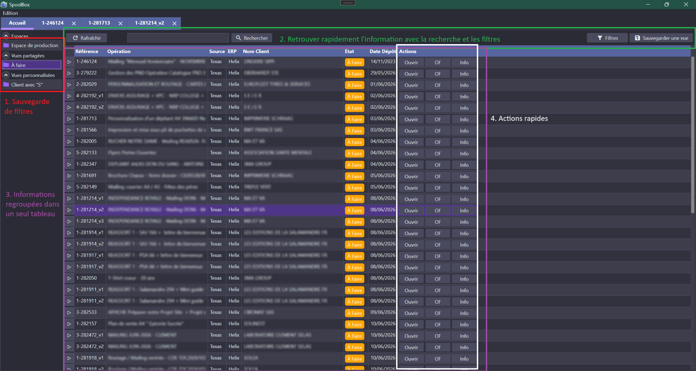
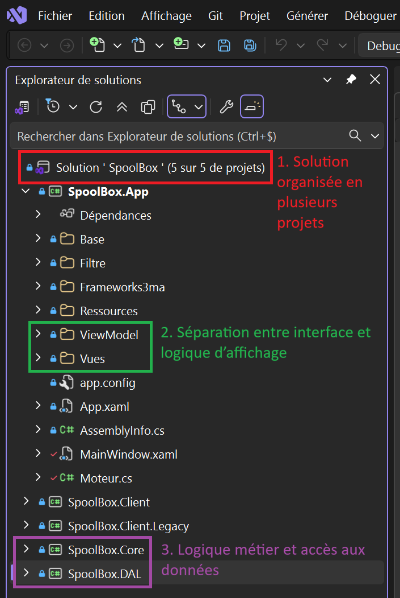
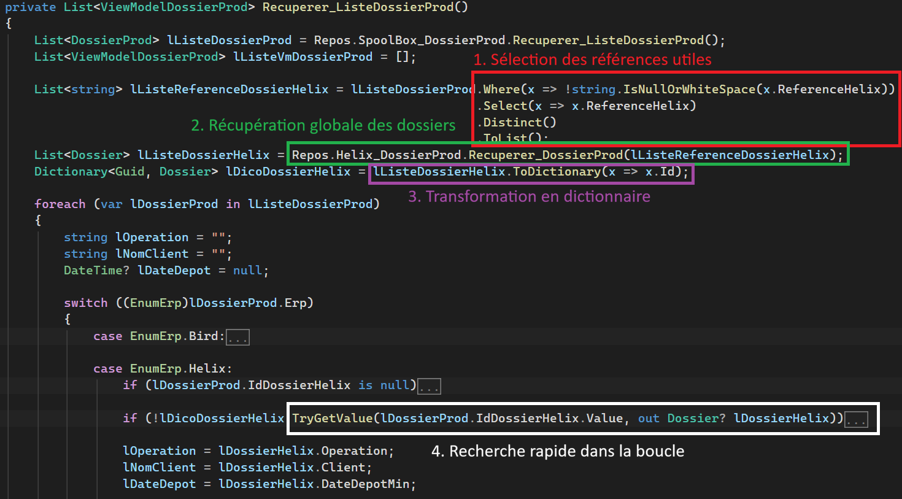

Cette partie présente les savoir-faire techniques développés durant mon alternance,
principalement à travers SpoolBox. Les traces montrent comment j'ai travaillé sur une
application métier, son architecture, son accès aux données et son optimisation.
Développer une interface métier avec SpoolBox
Concevoir une interface WPFComprendre un besoin utilisateurCentraliser des informations

Trace 1 - Interface principale de SpoolBox. Cette interface regroupe les vues, les filtres,
les informations liées aux opérations et les actions disponibles pour l’utilisateur.
La trace 1 présente l’interface principale de SpoolBox, une application destinée
aux collaborateurs de la manufacture. Son objectif est de leur permettre de retrouver plus rapidement
les informations dont ils ont besoin, sans devoir consulter plusieurs emplacements séparés.
Cette trace met d’abord en avant le savoir-faire
comprendre un besoin utilisateur.
L’interface a été construite autour d’un problème concret : les utilisateurs perdaient du temps à rechercher
des informations dans différents outils ou sources. SpoolBox sert donc de point d’entrée unique pour accéder
plus simplement aux données utiles.
On retrouve aussi le savoir-faire
centraliser des informations.
Le tableau principal regroupe plusieurs informations importantes comme la référence, l’opération, la source,
l’ERP, le client, l’état et la date de dépôt. Ces données sont affichées ensemble pour donner une vision plus
claire de chaque opération.
Enfin, cette trace illustre le savoir-faire
concevoir une interface WPF.
Les vues à gauche, la barre de recherche, les filtres et les boutons d’action permettent à l’utilisateur
de consulter, trier et ouvrir les informations directement depuis l’application. L’enjeu n’était donc pas
seulement d’afficher des données, mais de les organiser dans une interface utilisable dans un contexte métier.
Structurer une application en plusieurs projets
Structurer une solution C#Se repérer dans une architecture C# / WPFIdentifier l’accès aux données

Trace 2 - Organisation technique de SpoolBox dans Visual Studio. La solution est séparée
en plusieurs projets afin de distinguer l’application principale, l’interface WPF,
la logique métier et l’accès aux données.
La trace 2 présente l’organisation technique de la solution SpoolBox dans Visual Studio.
On peut voir que le projet est divisé en plusieurs parties, notamment SpoolBox.App,
SpoolBox.Core et SpoolBox.DAL. Cette séparation permet de mieux organiser
le code selon le rôle de chaque partie de l’application.
Cette trace illustre le savoir-faire
structurer une solution C#.
Dans une application professionnelle, il est important de ne pas regrouper toute la logique au même endroit.
Une organisation en plusieurs projets facilite la lecture du code, les corrections de bugs et les futures évolutions.
Elle met aussi en avant le savoir-faire
se repérer dans une architecture C# / WPF.
La présence des dossiers ViewModel et Vues montre que l’interface est organisée
en plusieurs parties. Avant de modifier une fonctionnalité, il faut donc comprendre où intervenir :
dans l’interface, dans le ViewModel, dans la logique métier ou dans une autre partie du projet.
Enfin, cette trace montre le savoir-faire
identifier l’accès aux données.
Le projet SpoolBox.DAL correspond à la partie liée à la récupération des données.
Cette séparation m’aide à comprendre où se trouvent les traitements liés aux informations utilisées
par l’application, sans les mélanger avec l’interface ou la logique métier.
Optimiser l'accès aux données avec SQL Server
Optimiser l’accès aux donnéesRéduire le nombre d’appelsStructurer un traitement efficace

Trace 3 - Optimisation de la récupération des données dans SpoolBox. La récupération globale
et l’utilisation d’un dictionnaire permettent de réduire fortement le temps de chargement.
La trace 3 présente une optimisation réalisée dans SpoolBox lors de la récupération
des dossiers de production. Au départ, certaines informations étaient récupérées directement dans
une boucle, ce qui entraînait de nombreux appels répétés et un temps de chargement d’environ
15 secondes.
Cette trace illustre le savoir-faire
optimiser l’accès aux données.
J’ai déplacé la récupération des dossiers en dehors de la boucle afin d’effectuer une seule récupération
globale. Les résultats sont ensuite stockés dans un dictionnaire, ce qui permet de les retrouver rapidement
pendant le traitement.
Elle met aussi en avant le savoir-faire
réduire le nombre d’appels.
Au lieu de récupérer les informations une par une, l’application prépare d’abord la liste des références
nécessaires, puis récupère les données correspondantes en une seule opération.
Enfin, cette trace montre le savoir-faire
structurer un traitement efficace.
L’utilisation d’un dictionnaire et de TryGetValue permet d’éviter des recherches inutiles dans
la boucle. Après cette modification, le chargement est passé d’environ 15 secondes à moins d’une seconde.
Bilan et auto-évaluation technique
Savoir-faire général : développer une application métier en C# / WPF
Ce savoir-faire regroupe plusieurs compétences travaillées dans les traces précédentes :
concevoir une interface WPF,
comprendre un besoin utilisateur et
centraliser des informations.
Il est principalement illustré par la trace 1, qui présente l’interface principale
de SpoolBox.
Dans le contexte de mon alternance, ce savoir-faire a été utilisé pour développer une application
destinée aux collaborateurs de la manufacture. L’objectif n’était pas seulement de créer une interface,
mais de proposer un outil capable de regrouper des informations utiles dans un même écran, afin de
limiter les recherches manuelles et les risques d’erreur.
Ce savoir-faire a été appris principalement en entreprise. Avant mon arrivée chez 3maGroup, mon expérience
était surtout basée sur Java et je ne connaissais pas encore C#, WPF ni Visual Studio. La principale difficulté
a donc été de comprendre le fonctionnement d’une application métier réelle, avec des contraintes utilisateurs
et des habitudes de travail déjà existantes.
Mon niveau actuel est intermédiaire en progression. Je suis aujourd’hui capable de comprendre
le besoin général d’un utilisateur, de participer à la création d’une interface et de relier cette interface
aux informations nécessaires. Je dois encore progresser sur l’anticipation des besoins et sur ma capacité
à proposer plus rapidement des améliorations.
Savoir-faire général : structurer une application professionnelle
Ce savoir-faire est lié aux compétences
structurer une solution C#,
se repérer dans une architecture C# / WPF et
identifier l’accès aux données.
Il est illustré par la trace 2, qui montre l’organisation de la solution SpoolBox
dans Visual Studio.
Dans SpoolBox, le projet est séparé en plusieurs parties, comme l’application principale, l’interface,
la logique métier et l’accès aux données. Cette organisation permet de rendre le code plus lisible,
plus maintenable et plus simple à faire évoluer. Elle m’aide aussi à savoir où intervenir lorsque je dois
modifier une fonctionnalité ou corriger un problème.
Cette compétence a été difficile au départ, car je devais apprendre à me repérer dans une solution plus
complexe que les projets réalisés en cours. En cours, les projets sont souvent plus petits et plus guidés.
En entreprise, il faut comprendre une architecture existante, respecter les choix déjà faits et éviter de
modifier du code au mauvais endroit.
Avant cette alternance, j’avais tendance à me concentrer sur le code à écrire directement. Aujourd’hui,
je comprends mieux l’importance de l’architecture d’un projet. Mon niveau est correct mais encore
perfectible : je sais mieux me repérer dans une solution C# / WPF, mais je dois encore améliorer
ma capacité à analyser l’impact d’une modification sur l’ensemble de l’application.
Savoir-faire général : exploiter et optimiser l’accès aux données
Ce savoir-faire rassemble les compétences
optimiser l’accès aux données,
réduire le nombre d’appels et
structurer un traitement efficace.
Il est principalement illustré par la trace 3, qui présente une optimisation réalisée
dans la récupération des dossiers de production.
Dans SpoolBox, certaines informations doivent être récupérées depuis des sources de données afin d’être
affichées dans l’application. Une difficulté rencontrée était le temps de chargement : certaines données
étaient récupérées à l’intérieur d’une boucle, ce qui provoquait de nombreux appels répétés et ralentissait
fortement l’application.
Pour résoudre ce problème, j’ai déplacé la récupération des données en dehors de la boucle. L’application
prépare d’abord la liste des références nécessaires, récupère les données en une seule opération, puis les
stocke dans un dictionnaire pour y accéder rapidement pendant le traitement. Cette modification a permis
de passer d’un chargement d’environ 15 secondes à moins d’une seconde.
Ce savoir-faire a été appris en grande partie en entreprise, car il s’appuie sur un problème réel de performance.
Avant cette expérience, je savais utiliser SQL et manipuler des données dans un cadre scolaire. Maintenant,
je comprends mieux que l’accès aux données doit aussi être pensé en fonction des performances et de l’expérience
utilisateur.
Mon niveau sur ce savoir-faire est intermédiaire. Je suis capable d’identifier un traitement
trop coûteux, de proposer une amélioration et de mesurer son effet. Je dois encore progresser sur l’analyse
globale des performances et sur les bonnes pratiques d’optimisation dès la conception.